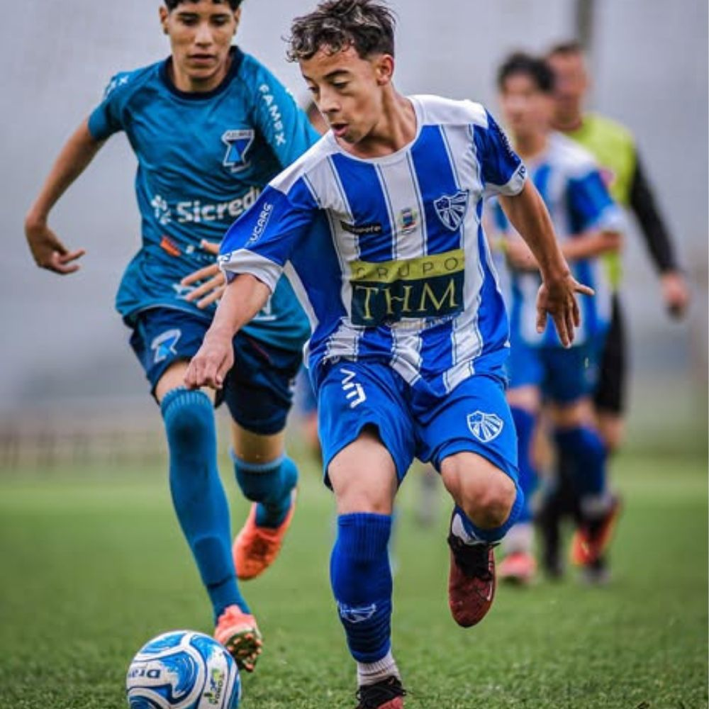
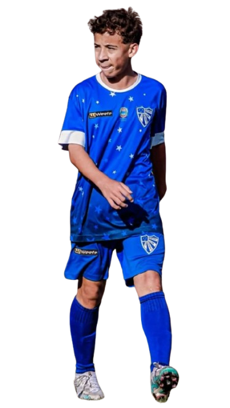
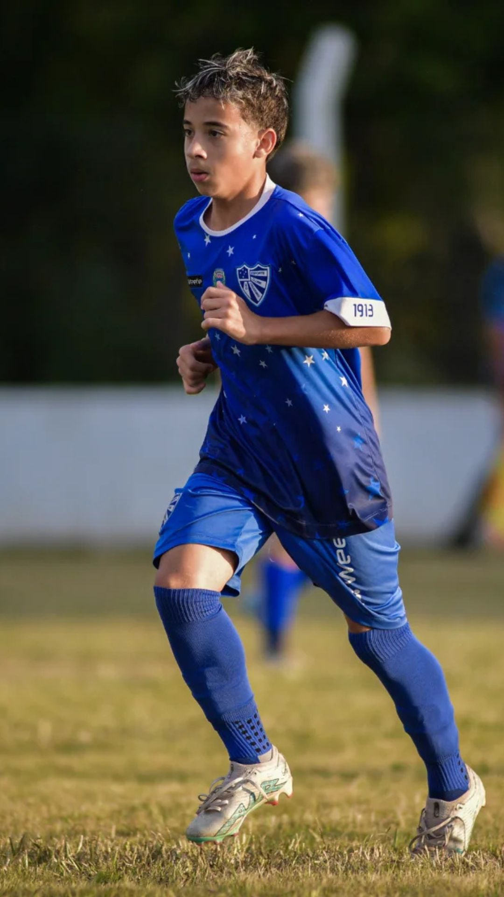
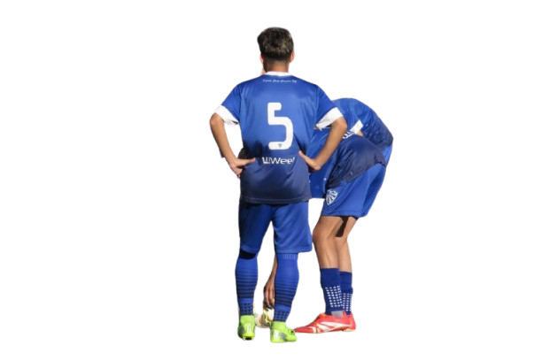

Ryan Coelho · Ryanzinho
Uma trajetória de formação registrada em diferentes equipes, competições e temporadas. Conheça os marcos públicos, as notícias do acervo e os canais vinculados ao perfil.

Futebol de base
Atuação: meio-campo.
Equipe no histórico da temporada: E.C. Cruzeiro-RS.
O histórico publicado reúne formação inicial, passagens por equipes de base e registros da Copa Maravilha 2026. As informações são apresentadas como registros de acervo, não como avaliação de scout certificada.
Jornada resumida
- GrêmioRegistro de formação e primeiras competições.
- São JoséHistórico publicado de participação em torneios da base.
- Cruzeiro-RSRegistros esportivos da Copa Maravilha e temporada.
Momentos esportivos
Imagens do acervo original. Publicações e detalhes dependem de autorização e revisão pelos responsáveis.



Parcerias e retorno comercial
O novo FutTalento propõe registrar apoiadores, exposição, visitas, cupons e vendas validadas por estabelecimento. Para este atleta, não há números comerciais verificados nem lista de patrocinadores confirmada para exibição.
Sem divulgação de data completa de nascimento, peso ou localização específica do menor. Em caso de correção ou solicitação familiar: contato@futtalento.com.br.